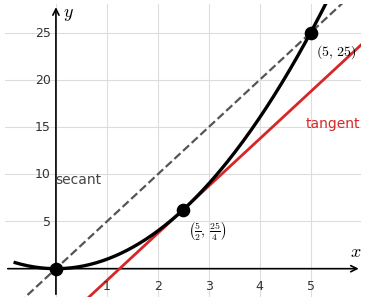

Lesson 26: The Mean Value Theorem
If \(f(x)\) is continuous on \([a, b]\) and differentiable on \((a, b)\), then there is at least one number \(c\) in \((a, b)\) such that the equation below is true.
The Mean Value Theorem
\[ f'(c) = \frac{f(b) - f(a)}{b - a} \]
Idea: Somewhere, the instantaneous rate of change equals the average rate of change. The tangent line there is parallel to the secant line.

For \(f(x) = x^2\) on \([0, 5]\), find the average rate of change, the secant line, the number \(c\) guaranteed by the Mean Value Theorem, and the tangent line at \(x = c\).
\[
\begin{aligned}
\frac{f(5) - f(0)}{5 - 0} &= \frac{25 - 0}{5} \\
&= 5
\end{aligned}
\]
The secant line passes through \((0, 0)\) with slope 5, so it is \(y = 5x\).
\[
\begin{aligned}
f'(c) = 2c &= 5 \\
c &= \frac{5}{2}
\end{aligned}
\]
\[
\begin{aligned}
f\left(\tfrac{5}{2}\right) &= \frac{25}{4} \\
y - \frac{25}{4} &= 5\left(x - \frac{5}{2}\right) \\
y &= 5x - \frac{25}{4}
\end{aligned}
\]
The graph at the top of this page shows this scenario.